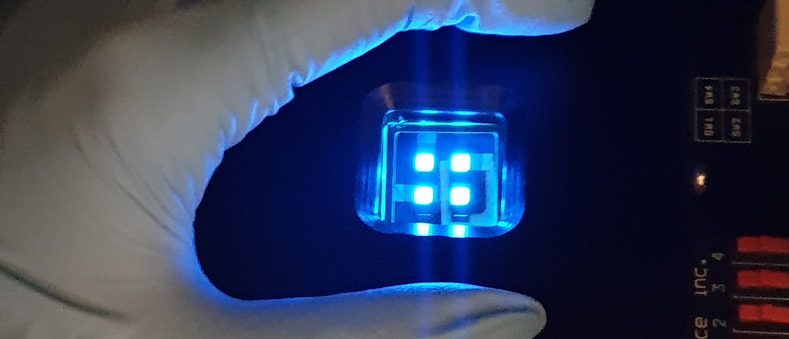

소자평가
소자평가
우리 (주)CMDL은 고객 요구시 OLED 재료에 대한 신뢰서 있는 소자 평가가 가능합니다.
OLED 재료가 실제 디바이스에 적용되었을 때 구동 효율, 수명 등에 대한 평가와
제품 출하시 최종품에 대한 품질 관리(OQC)가 가능하여 보다 신뢰할 수 있는 양산 환경을 구현하였습니다.
- OLED 소자 제작을 위한 유기반도체 소재의 진공 증착이 가능한 반자동
Vacuum Deposition Evaporator - IVL system (OLED 소자의 발광효율, 색순도, 구동전압 측정)
- LTS system (OLED 소자의 수명 측정)
- Alpha step (Film 두께 측정)